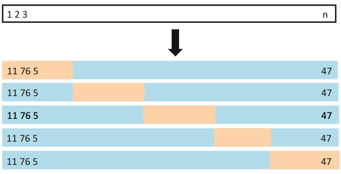
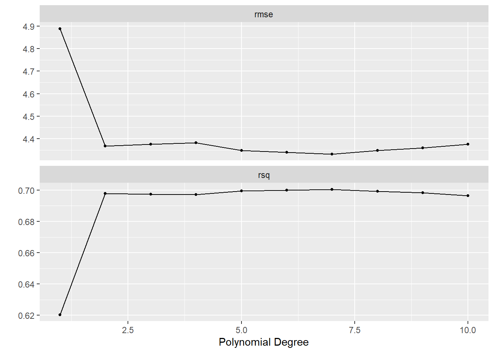
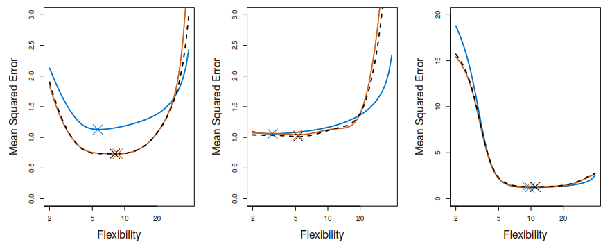
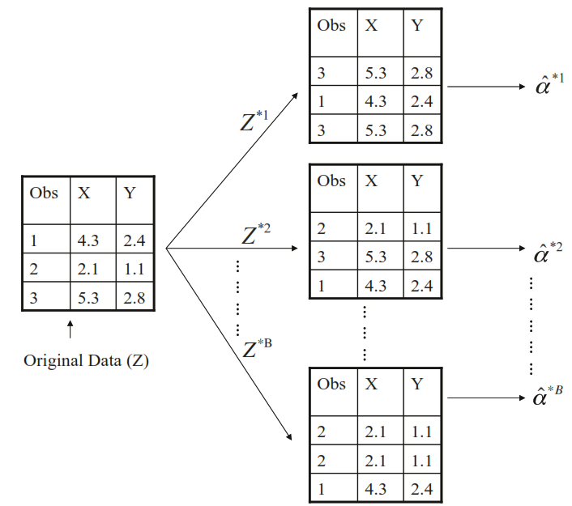
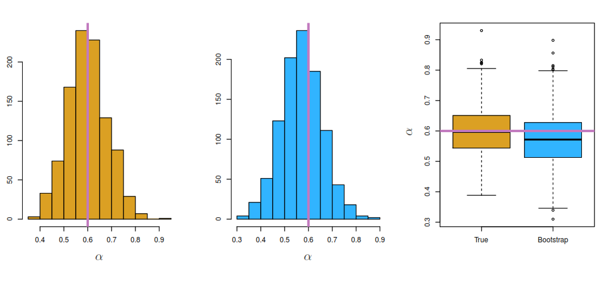

The Resampling Methods are indispensable to obtain additional information about a fitted model.
In this chapter, we will explore the methods:
Cross-validation
Used to estimate the test error in order to evaluate a model’s performance (model assessment).
The location of the minimum point in the test error curve to select between several models or find the best of level of flexibility to one model (model selection).
Bootstrap
Estimates the uncertainty associated with a given value or statistical learning method. For example, it can estimate the standard errors of the coefficients from a linear regression fit
4.2 Cross-Validation
4.2.1 Training error limitations
The training error trends to underestimate the real model’s error.
To solve that problem we can hold out a subset of the training observations from the fitting process.
4.2.2 Validation Set Approach
Splits randomly the available set of observations into two parts, a training set and a validation set.
As we split the data randomly we will have a different estimation of the error rate based on the seed set in R.
Main Characteristics
Level
Accuracy in estimating the testing error
Low
Time efficiency
High
Proportion of data used to train the models (bias mitigation)
Low
Estimation variance
-
Coding example
You can learn more about tidymodels and this book in ISLR tidymodels labs by Emil Hvitfeldt.
# Loading functions and datalibrary(tidymodels)library(ISLR)library(data.table)# Defining the model type to trainLinealRegression<-linear_reg()|>set_mode("regression")|>set_engine("lm")# Creating the rplit objectset.seed(1)AutoValidationSplit<-initial_split(Auto, strata =mpg, prop =0.5)AutoValidationTraining<-training(AutoValidationSplit)AutoValidationTesting<-testing(AutoValidationSplit)lapply(1:10, function(degree){recipe_to_apply<-recipe(mpg~horsepower, data =AutoValidationTraining)|>step_poly(horsepower, degree =degree)workflow()|>add_model(LinealRegression)|>add_recipe(recipe_to_apply)|>fit(data =AutoValidationTraining)|>augment(new_data =AutoValidationTesting)|>rmse(truth =mpg, estimate =.pred)|>transmute(degree =degree,.metric, .estimator, .estimate)})|>rbindlist()
degree .metric .estimator .estimate
<int> <char> <char> <num>
1: 1 rmse standard 5.058317
2: 2 rmse standard 4.368494
3: 3 rmse standard 4.359262
4: 4 rmse standard 4.351128
5: 5 rmse standard 4.299916
6: 6 rmse standard 4.319319
7: 7 rmse standard 4.274027
8: 8 rmse standard 4.330195
9: 9 rmse standard 4.325196
10: 10 rmse standard 4.579561
4.2.3 Leave-One-Out Cross-Validation (LOOCV)
The statistical learning method is fit on the \(n-1\)training observations, and a prediction\(\hat{y}_1\) is made for the excluded observation to calculate \(\text{MSE}_1 = (y_1-\hat{y}_1)^2\). Then it repeats the process \(n\) times and estimate the test error rate.
Based on the average of \(n\) test estimates it reports the test error rate.
- \(\hat{y}_i\): Refers to the ith fitted value from the original least squares fit. - \(h_i\) Refers to the leverage of \(x_i\) as measure of the rarity of each value.
- \(\hat{g}_\lambda\): Refers the smoothing spline function fitted to all of the training observations.
Coding example
collect_loo_testing_error<-function(formula,loo_split,metric_function=rmse,...){# Validationsstopifnot("There is no espace between y and ~"=formula%like%"[A-Za-z]+ ")stopifnot("loo_split must be a data.table object"=is.data.table(loo_split))predictor<-sub(pattern =" .+", replacement ="", formula)formula_to_fit<-as.formula(formula)Results<-loo_split[, training(splits[[1L]]), by ="id"][, .(model =.(lm(formula_to_fit, data =.SD))), by ="id"][loo_split[, testing(splits[[1L]]), by ="id"], on ="id"][, .pred:=predict(model[[1L]], newdata =.SD), by ="id"][, metric_function(.SD, truth =!!predictor, estimate =.pred, ...)]setDT(Results)if(formula%like%"degree"){degree<-gsub(pattern ="[ A-Za-z,=\\~()]", replacement ="", formula)Results<-Results[,.(degree =degree, .metric, .estimator, .estimate)]}return(Results)}# Creating the rplit objectAutoLooSplit<-loo_cv(Auto)# Transforming to data.tablesetDT(AutoLooSplit)paste0("mpg ~ poly(horsepower, degree=", 1:10, ")")|>lapply(collect_loo_testing_error, loo_split =AutoLooSplit)|>rbindlist()
degree .metric .estimator .estimate
<char> <char> <char> <num>
1: 1 rmse standard 4.922552
2: 2 rmse standard 4.387279
3: 3 rmse standard 4.397156
4: 4 rmse standard 4.407316
5: 5 rmse standard 4.362707
6: 6 rmse standard 4.356449
7: 7 rmse standard 4.339706
8: 8 rmse standard 4.354440
9: 9 rmse standard 4.366764
10: 10 rmse standard 4.414854
4.2.4 k-Fold Cross-Validation
Involves randomly dividing the set of observations into k groups, or folds, of approximately equal size. The first fold is treated as a validation set, and the method is fit on the remaining \(k-1\) folds.

Based on the average of \(k\) test estimates it reports the test error rate.
Proportion of data used to train the models (bias mitigation)
Regular
Estimation variance
Regular
According to Hands-on Machine Learning with R, as \(k\) gets larger, the difference between the estimated performance and the true performance to be seen on the test set will decrease.
Note: The book recommends using \(k = 5\) or \(k = 10\).
Coding example
AutoKFoldRecipe<-recipe(mpg~horsepower, data =Auto)|>step_poly(horsepower, degree =tune())AutoTuneReponse<-workflow()|>add_recipe(AutoKFoldRecipe)|>add_model(LinealRegression)|>tune_grid(resamples =vfold_cv(Auto, v =10), grid =tibble(degree =seq(1, 10)))show_best(AutoTuneReponse, metric ="rmse")
# A tibble: 5 × 7
degree .metric .estimator mean n std_err .config
<int> <chr> <chr> <dbl> <int> <dbl> <chr>
1 7 rmse standard 4.33 10 0.144 Preprocessor07_Model1
2 6 rmse standard 4.34 10 0.143 Preprocessor06_Model1
3 8 rmse standard 4.35 10 0.145 Preprocessor08_Model1
4 5 rmse standard 4.35 10 0.146 Preprocessor05_Model1
5 9 rmse standard 4.36 10 0.149 Preprocessor09_Model1
autoplot(AutoTuneReponse)

4.2.5 LOOCV vs 10-Fold CV accuracy
True test MSE: Blue solid line
LOOCV: Black dashed line
10-fold CV: Orange solid line

4.3 Bootstrap
By taking many samples from a population we can obtain the Sampling Distribution of a value, but in many cases we just can get a single sample from the population. In theses cases, we can resample the data with replacement to generate many samples from one sample, creating a Bootstrap Distribution of a value.

As you can see bellow the center of the Bootstrap Distribution must of the time differs from the center of the Sampling Distribution, but its very accurate at estimating the dispersion of the value.

4.3.1 Coding example
AutoBootstraps<-bootstraps(Auto, times =500)boot.fn<-function(split){LinealRegression|>fit(mpg~horsepower, data =analysis(split))|>tidy()}AutoBootstraps|>mutate(models =map(splits, boot.fn))|>unnest(cols =c(models))|>group_by(term)|>summarise(low =quantile(estimate, 0.025), mean =mean(estimate), high =quantile(estimate, 0.975), sd =sd(estimate))
# A tibble: 2 × 5
term low mean high sd
<chr> <dbl> <dbl> <dbl> <dbl>
1 (Intercept) 38.5 40.0 41.7 0.851
2 horsepower -0.173 -0.158 -0.145 0.00734